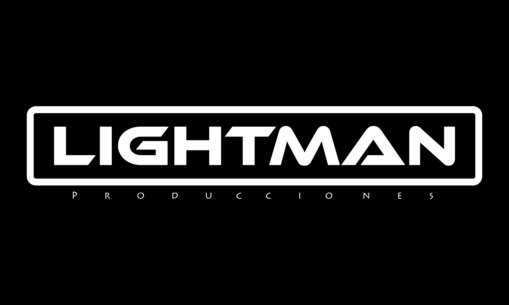
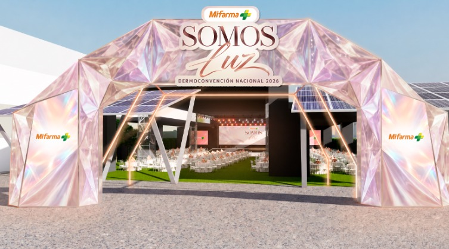
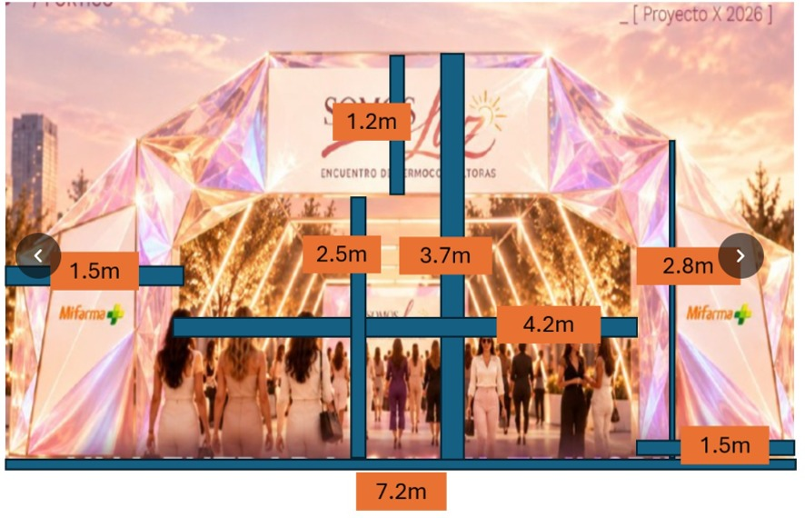

Estructura y luz fija
Arcos con estructura de soporte y tubos LED para acompañar el pórtico en Convexia. Instalación solicitada para el 2 de noviembre. El evento es de día y se pide un color fijo.

PROPUESTA 07 · 26 OCT 2026PROYECTO X / ANTONELLA · CONVEXIA
Explora el ingreso de noche: arcos de luz, color y movimiento. Ajusta la geometría y compara efectos LED con el precio siempre a la vista.
Metrado referencial de los tres lados de cada arco. Geometría superior y altura por validar; pórtico decorativo no incluido. Montaje, fijaciones y alimentación por coordinar. Las tarifas corresponden al alcance base; control de efectos por validar. El PDF se genera con las medidas y la tarifa que estás viendo.
La longitud suma los tres lados luminosos de cada arco. No incluye cableado, holguras ni adaptación a módulos comerciales. Es referencial y cambia con el modelo.
01 / EL PUNTO DE PARTIDA
Dos referencias compartidas por Antonella definen el lenguaje del ingreso. El modelo interpreta la forma trapezoidal y conserva el pórtico como contexto.


02 / CRITERIOS DE REVISIÓN
Arcos con estructura de soporte y tubos LED para acompañar el pórtico en Convexia. Instalación solicitada para el 2 de noviembre. El evento es de día y se pide un color fijo.
Pórtico general, con vano anotado de 4.20 × 2.50 m, franja superior de 1.20 m y laterales de 1.50 m de ancho y 2.80 m de alto. No sustituyen una medición en campo.
Geometría trapezoidal con parte superior al 64% del ancho inferior y soportes discretos. Vista nocturna con efectos LED para comparación visual. Cantidad y separación recibidas el 26 de octubre. Altura, ancho superior y acabado pendientes de validación final.
Validar separación entre ejes, ancho libre superior y altura; color, tipo de tubo y alimentación. Definir fijaciones, estabilidad, circulación y horarios de acceso con producción.
04 / ARCHIVO DEL ESTUDIO
Descarga el modelo configurado o guarda una vista para comentar la propuesta.